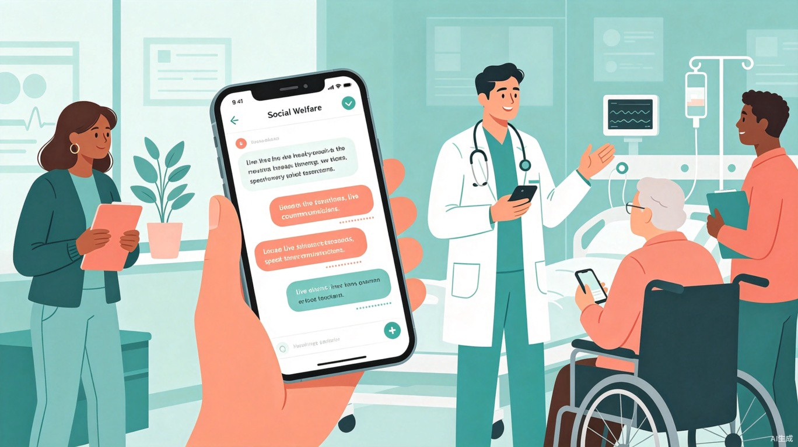

让每一次对话都被看见，让每一个声音都被理解

中国现有约2700万听障人士，他们在日常交流、就医问诊、课堂学习、职场沟通等关键场景中，因无法实时获取语音信息而面临巨大的信息壁垒。现有解决方案要么价格昂贵（专业助听设备数千至上万元），要么准确率不足、延迟高，且普遍缺乏方言支持。
团队在一次社区志愿活动中，目睹一位听障老人因无法听清医生的用药说明，反复确认仍不放心，最终只能请护士手写纸条。这个场景让我们深刻意识到：技术应该成为消除沟通障碍的桥梁，而非奢侈品。我们希望借助AI语音识别的普惠力量，让每一位听障人士都能平等、有尊严地获取信息。
「听世界」是一款基于端侧AI大模型的免费实时语音转文字工具。用户打开应用后，可实时将周围语音转化为高精度文字字幕，支持普通话及主要方言识别、专业术语优化、离线模式等功能。产品以公益为核心，所有基础功能永久免费，旨在成为听障人群随身的"数字助听器"。
延迟低至200ms，边说边显示，对话不中断
支持粤语、四川话、上海话等8大方言
核心模型本地化运行，无网环境也能用
医疗、教育、会议专属词库，准确率>96%
听障患者将手机放在医生面前，实时查看诊断说明和用药指导，避免因听不清导致误诊或错服药物。
听障学生将课堂讲解转为文字笔记，支持课后回顾，缩小与普通学生的信息获取差距。
职场听障人士参与团队讨论时，实时获取会议内容，提升职场参与感和竞争力。
与家人朋友面对面交流时，减少因反复确认带来的沟通尴尬，重建社交信心。
信息无障碍是衡量社会文明程度的重要标尺。「听世界」通过技术手段将听障人群从"信息孤岛"中解放出来，让他们能够独立就医、自主学习、平等就业。每一次成功的对话转写，都是对"平等、参与、共享"理念的践行。
产品还将与全国残联、特殊教育学校、社区卫生服务中心建立合作，为偏远地区听障群体提供免费设备和培训，推动公益资源下沉。
相比传统人工手语翻译，「听世界」实现了7x24小时即时可用，将沟通等待时间从数小时缩短至毫秒级。实测数据显示：
项目采用"公益核心+商业延展"的双轮驱动模式：
这一模式确保了产品的公益属性不受商业侵蚀，同时通过技术输出实现自我造血，让善意可持续。
本方案由 TRAE Work 辅助生成。上图展示了「听世界」在医疗场景中的核心使用方式：用户手持手机，屏幕上实时显示医生的语音转文字内容，同时支持对话历史的保存与回顾。
产品的核心交互流程为：打开应用 → 选择场景模式（医疗/教育/会议/日常）→ 开始实时转写 → 查看字幕与历史记录 → 导出或分享文字内容。整个流程设计遵循"最少点击原则"，确保老年用户和首次使用者也能无障碍上手。